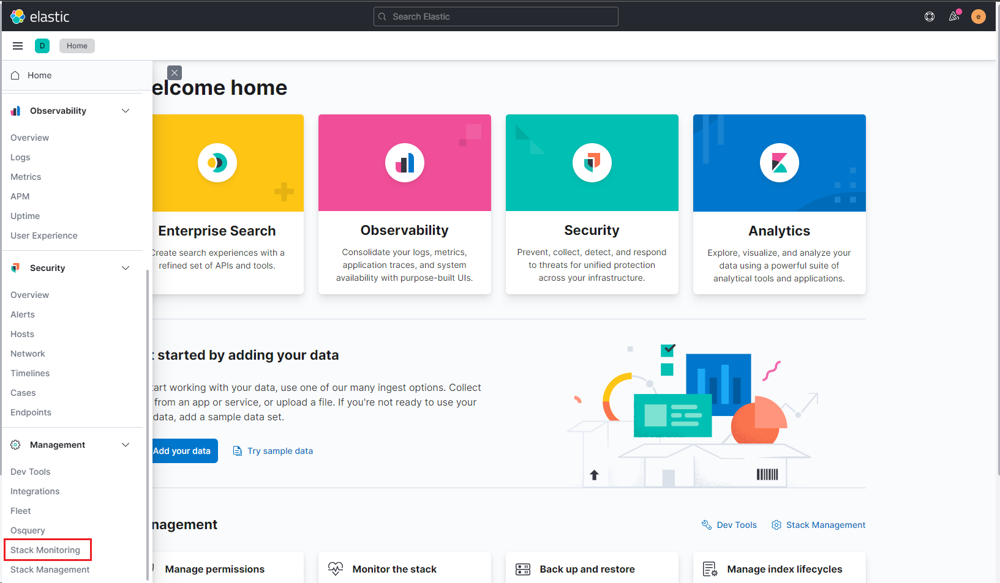
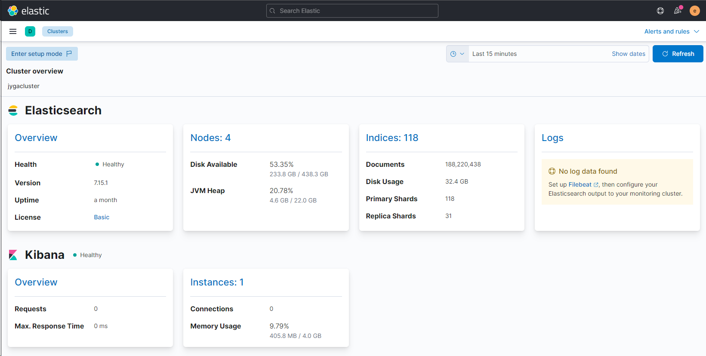
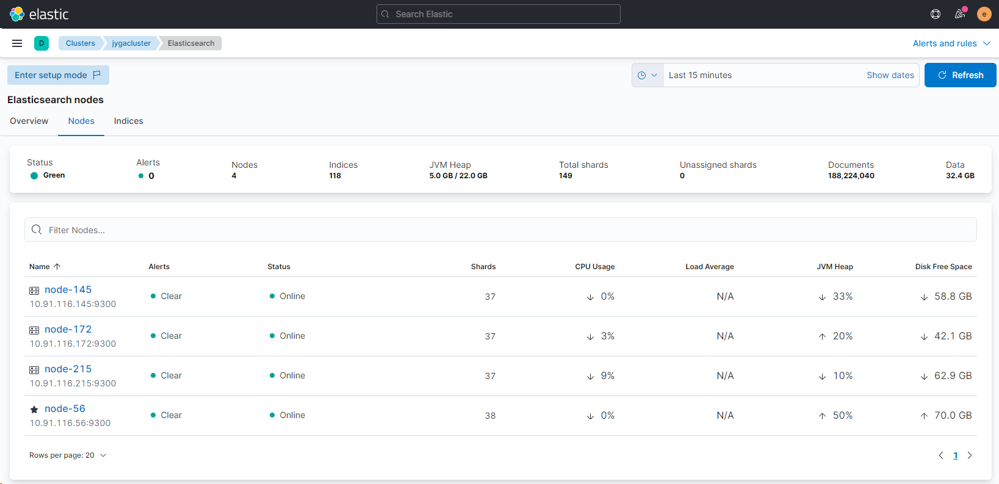
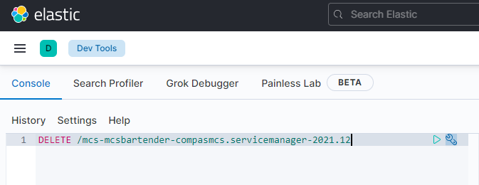

Mantenimiento del stack
El mantenimiento se centra en el uso de recursos de los servidores donde se encuentra instalado Elasticsearch. La alta demanda de memoria y el creciente espacio en disco hacen que sea necesario monitorearlo y Kibana provee herramienta para ello. Del menú desplegable, seleccionar Stack Monitoring

En ella se obtiene toda la información referente al clúster como el número de nodos, la cantidad de indices y la salud del mismo.

Al seleccionar Nodes se ve con más detalle los recursos que están utilizando cada de las instancias de Elasticsearch en su respectivo servidor. Se debe tener principal atención en el CPU Usage, JVM Heap y Disk Free Space

JVM Heap es el porcentage de uso de memoria del total que se asignó a la maquina virtual en el archivo jvm.option. Si es muy poca para la cantidad de trabajo que recibe, el CPU Usage se elevará, entonces puede presentarse el caso de tener que hacer cambios en la asignación de memoria para encontrar un balance.
Shard es la unidad en la que Elasticsearch distribuye datos en el cluster. Cada shard es una instancia de un índice de Lucene, que podría imaginarse como un motor de búsqueda en sí mismo, que indexa y administra consultas para un subconjunto de datos en un clúster de Elasticsearch. A medida que se escriben datos en un shard, estos se publican en nuevos segmentos inmutables de Lucene en el disco, y es entonces que están disponibles para consultas.
Aunque tener varios shards aumenta la disponibilidad de los datos, es bastante caro en términos de consumo de memoria. No existe una fórmula infalible para saber cuántos Shards implementar por indice, pero una regla general es asegurarse de tener 20 por Gigabyte. Entonces un nodo con 30GB no debería tener más de 600 shards. A forma de backup, se implementan las replicas de los shards en caso de una falla. Por limitaciones de los servidores para implementar el stack actualmente sólo existe 1 shard por índice y no tienen replicas.
La nomenclatura de los indices se pensó tener mejor gestión de los datos, ya que se puede eliminar información por fecha (año y mes), por sistema, por host o por nombre de servicio. Existen agentes que ayudan a gestionar los indices pero no trabajan a nivel de documentos para liberar espacio.
La forma más fácil para eliminar los indices y los documentos asociados a este es usar la API de Elasticsearch por medio de Dev Tools:
Por ejemplo, para eliminar los logs de del servicio compasmcs.servicemanager del sistema MCS del mes de Diciembre del año 2021 :
DELETE /mcs-mcsbartender-compasmcs.servicemanager-2021.12

Pero se puede ser más general y abarcar otros indices; para eliminar los logs de todos los sistemas del mes de Diciembre año 2021:
DELETE /*2021.12
La recuperación de espacio en disco será inmediata.